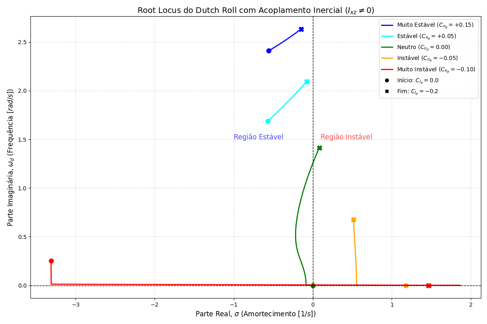
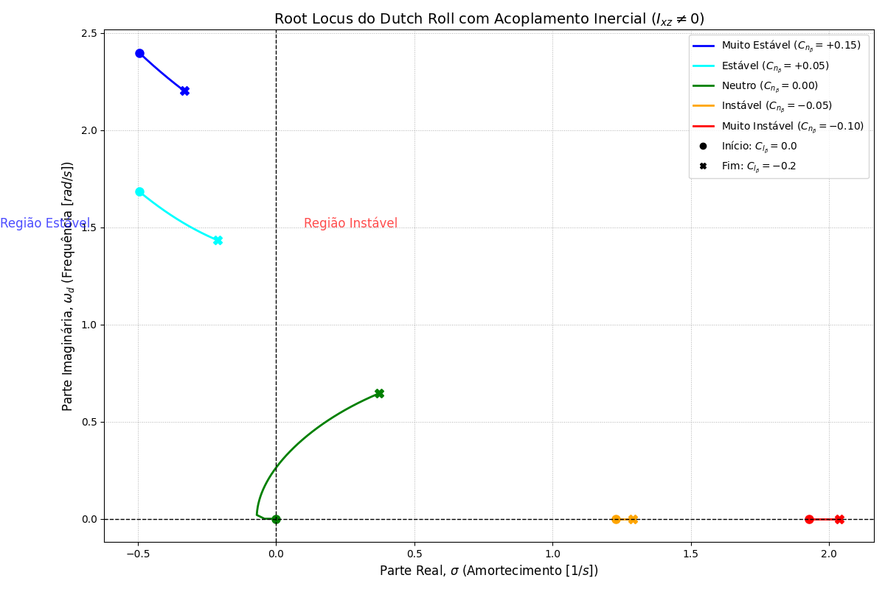

O Dutch Roll é um modo oscilatório látero-direcional caracterizado pelo acoplamento complexo entre rolagem (roll), guinada (yaw) e derrapagem (sideslip). A compreensão profunda desse modo exige transitar da cinemática básica para a análise da matriz de estado completa. Este documento detalha a dedução matemática e a intuição física por trás da estabilidade desse modo.
A análise demonstra matematicamente que o amortecimento natural primário da aeronave atua sobre a taxa de variação da derrapagem (\(\dot{\beta}\)) e não sobre a taxa inercial de guinada (\(r\)). O texto expande as equações de frequência e amortecimento, avalia os efeitos de primeira ordem (\(C_{n_\beta}\), \(C_{n_r}\), \(I_z\)), os complexos acoplamentos inerciais (\(I_{xz}\)) e aerodinâmicos (\(C_{l_\beta}\)), finalizando com a otimização estrutural via ventral fin e a arquitetura ideal de controle ativo (yaw damper baseado em \(\dot{\beta}\)).
Sumário
- 1. A Matriz de Estado e o Acoplamento Inercial (\(I_{xz}\))
- 2. A Natureza de \(\dot{\beta}\): O Verdadeiro Amortecedor
- 3. Efeitos de Primeira Ordem: \(C_{n_\beta}\), \(C_{n_r}\) e \(I_z\)
- 4. A Força Lateral (\(Y_\beta\))
- 5. O Acoplamento do Efeito Diedro (\(C_{l_\beta}\))
- 6. O Papel Estratégico do Ventral Fin
- 7. Controle Ativo: A Supremacia do \(\dot{\beta}\)
1. A Matriz de Estado e o Acoplamento Inercial (\(I_{xz}\))
Para modelar o Dutch Roll sem perda de fidelidade, utilizamos o vetor de estado látero-direcional \(x = [\beta, p, r, \phi]^T\). A matriz de estado linearizada \(A\) (onde \(\dot{x} = Ax\)) é expressa utilizando as derivadas dimensionais com linha (primed derivatives), essenciais para não desprezar o produto de inércia \(I_{xz}\):
\[A = \begin{bmatrix} \frac{Y_\beta}{V} & \frac{Y_p}{V} & \left(\frac{Y_r}{V} - 1\right) & \frac{g\cos\theta_0}{V} \\ L_\beta' & L_p' & L_r' & 0 \\ N_\beta' & N_p' & N_r' & 0 \\ 0 & 1 & \tan\theta_0 & 0 \end{bmatrix}\]
O \(I_{xz}\) surge quando os eixos principais de inércia não estão alinhados com os eixos geométricos do corpo. Matematicamente, as derivadas “linha” incorporam esse acoplamento cruzado de acelerações:
\[N_\beta' = \frac{N_\beta + \frac{I_{xz}}{I_{zz}}L_\beta}{1 - \frac{I_{xz}^2}{I_{xx}I_{zz}}}\]
\[L_\beta' = \frac{L_\beta + \frac{I_{xz}}{I_{xx}}N_\beta}{1 - \frac{I_{xz}^2}{I_{xx}I_{zz}}}\]
Intuição Física: Se \(I_{xz} \neq 0\), um momento aerodinâmico puro de rolagem (\(L\)) gerará não apenas uma aceleração de rolagem (\(\dot{p}\)), mas induzirá instantaneamente uma aceleração de guinada (\(\dot{r}\)). O termo \(I_{xz}\) atua reduzindo a rigidez direcional efetiva (\(C_{n_\beta}^*\)) da aeronave, transferindo energia entre os eixos de forma imperceptível na aerodinâmica pura.
2. A Natureza de \(\dot{\beta}\): O Verdadeiro Amortecedor
A extração das propriedades do Dutch Roll advém da solução do polinômio característico da matriz A. Isolando o par de autovalores complexos conjugados, obtemos as equações analíticas para frequência e amortecimento.
Frequência Natural (\(\omega_{n_{DR}}\)):
\[\omega_{n_{DR}} \approx \sqrt{N_\beta' - \frac{L_\beta' N_p'}{L_p'} + \frac{Y_\beta}{V} N_r'}\]
Fator de Amortecimento (\(\zeta_{DR}\)):
\[\zeta_{DR} \approx \frac{-1}{2\omega_{n_{DR}}} \left( \left[ \frac{Y_\beta}{V} + N_r' \right] + \frac{L_\beta' N_p'}{N_\beta'} \right)\]
A equação diferencial que rege a oscilação assume a forma canônica de um oscilador harmônico:
\[ \ddot{\beta} + \underbrace{(-Y_\beta/V)}_{\text{amortecimento}} \dot{\beta} + \underbrace{(N_\beta)}_{\text{mola}} \beta = 0 \]
Essa equação é a revelação matemática central da dinâmica direcional: o termo de amortecimento natural primário da aeronave, \(-Y_\beta/V\), atua fisicamente multiplicando a taxa de variação da derrapagem (\(\dot{\beta}\)). A aeronave não é amortecida puramente pela sua rotação no espaço inercial (\(r\)), mas sim pela velocidade com que o vento relativo lateral muda.
3. Efeitos de Primeira Ordem: \(C_{n_\beta}\), \(C_{n_r}\) e \(I_z\)
A Estabilidade Direcional (\(C_{n_\beta}\)) — A Mola
É o efeito cata-vento (weathercock). O estabilizador vertical gera uma força de restauração proporcional à posição da perturbação (\(\beta\)). Uma mola direcional rígida eleva a frequência natural (\(\omega_n\)) e blinda a aeronave contra injeções de energia parasita causadas pelo rolamento.
O Amortecimento de Guinada (\(C_{n_r}\)) — O Amortecedor Viscoso
É o componente rotacional que resiste à variação \(\dot{\beta}\). Presente diretamente no coeficiente dimensional, é o sorvedouro primário de energia do sistema.
O Momento de Inércia (\(I_z\)) — A Massa Rotacional
Um aumento no \(I_z\) reduz instantaneamente a “mola” dimensional \(N_\beta\) (pois \(N_\beta = C_{n_\beta} q S b / I_z\)), derrubando a frequência natural. Isso explica por que aeronaves maiores têm Dutch Roll menos amortecido.
4. A Força Lateral (\(Y_\beta\))
A derrapagem gera uma força aerodinâmica lateral no centro de gravidade. O trabalho realizado por essa força ao transladar a massa no fluido é um mecanismo de dissipação de energia translacional puro. Numericamente inferior a \(C_{n_r}\), porém estritamente estabilizante.
5. O Acoplamento do Efeito Diedro (\(C_{l_\beta}\))
O temido acoplamento cruzado: quando a derrapagem aciona o forte diedro aerodinâmico (\(C_{l_\beta}\)), causando rápida rolagem. Dois mecanismos degradam o amortecimento:
Cenário A: Aeronave Estável Direcionalmente (\(C_{n_\beta} > 0\))
- Inercial: A aceleração de rolagem interage com \(I_{xz}\), subtraindo estabilidade direcional aparente e abaixando a frequência
- Aerodinâmico: A alta taxa de rolagem gera guinada adversa (\(C_{n_p}\)), injetando energia cinética no movimento oscilatório
Conclusão: Aumentar o efeito diedro estabilizante em aeronave com \(C_{n_\beta} > 0\) destrói progressivamente o amortecimento do Dutch Roll.

Figura 1 — Root Locus do Dutch Roll com acoplamento inercial (\(I_{xz} \neq 0\)): variação dos autovalores com o incremento do efeito diedro (\(C_{l_\beta}\) de 0.0 a −0.2) para cinco níveis de estabilidade direcional (\(C_{n_\beta}\)). Região à esquerda do eixo imaginário é estável.

Figura 2 — Root Locus do Dutch Roll (vista ampliada): evidencia a migração dos polos para a região instável conforme o efeito diedro aumenta em aeronaves com estabilidade direcional neutra ou negativa.
Cenário B: Aeronave Instável Direcionalmente (\(C_{n_\beta} < 0\))
O acoplamento torna-se estabilizante: a guinada adversa atua como contra-momento, freando o nariz e extraindo energia (embora a aeronave divirja aperiodicamente logo em seguida por causa da mola direcional colapsada).
6. O Papel Estratégico do Ventral Fin
Quando a aeronave sofre com Dutch Roll subamortecido associado a excesso de rolagem, ampliar o estabilizador vertical convencional pode agravar o cenário (piora o diedro). A solução ótima é o ventral fin (aleta inferior):
Por estar posicionado abaixo do CG, otimiza três derivadas simultaneamente:
- Aumento de \(C_{n_\beta}\) e \(C_{n_r}\): Reforça mola e amortecedor
- Redução do efeito diedro: Força lateral abaixo do eixo de rolagem gera momento de rolagem positivo, mitigando o \(C_{l_\beta}\) negativo e impedindo a injeção fatal de energia via rolagem
7. Controle Ativo: A Supremacia do \(\dot{\beta}\)
Quando a aerodinâmica passiva não atende, injeta-se amortecimento artificial via Yaw Damper.
Por que \(\dot{\beta}\), não \(r\)
Através da equação cinemática da aceleração lateral, isolamos a relação entre a taxa inercial medida (\(r\)) e a dinâmica real de derrapagem:
\[r \approx -\dot{\beta} + \frac{Y_\beta}{V}\beta + \frac{g}{V}\phi\]
Um Yaw Damper que atua com base pura em \(r\) (\(\delta_r = K_r r\)) injeta inadvertidamente três comandos:
\[\delta_r = -K_r \dot{\beta} + K_r \frac{Y_\beta}{V}\beta + K_r \frac{g}{V}\phi\]
- \(\dot{\beta}\): O termo fisicamente correto — replica o amortecimento natural
- \(\beta\): Modifica artificialmente a mola direcional, deformando a frequência
- \(\phi\): Acopla espuriamente o leme à atitude de rolagem, induzindo guinada desnecessária em curvas (turn coordination interference)
A Defasagem Dinâmica
Como o sinal de \(r\) carrega informações espúrias de posição estática, seu pico ocorre fora de fase com o instante de máxima eficiência de extração de energia. O leme comandado por \(r\) atua cronicamente atrasado ou adiantado.
A Solução: Feedback de \(\dot{\beta}\)
A lei de controle baseada na velocidade intrínseca da perturbação (\(\dot{\beta}\)) alinha-se perfeitamente com a resistência natural da aeronave, garantindo máxima dissipação de energia sem corromper a frequência estrutural nem a manobrabilidade de regime permanente.
Referências
[1] Etkin, B., e Reid, L. D., Dynamics of Flight: Stability and Control, 3ª ed., John Wiley & Sons, New York, 1996. — Derivação da matriz de estado látero-direcional e modos naturais.
[2] Nelson, R. C., Flight Stability and Automatic Control, 2ª ed., McGraw-Hill, New York, 1998. — Tratamento introdutório do Dutch Roll e das derivadas de estabilidade. Link
[3] Roskam, J. Airplane Flight Dynamics and Automatic Flight Controls, DAR Corporation, 2001. — Análise detalhada de acoplamento inercial \(I_{xz}\) e design de yaw dampers. Link
[4] MIL-STD-1797A, Flying Qualities of Piloted Aircraft, US DoD, 1990. — Requisitos de qualidades de voo para modos látero-direcionais. Link
[5] Padfield, G. D., Helicopter Flight Dynamics, 2ª ed., Blackwell Science, Oxford, 2007. — Referência abrangente sobre qualidades de voo e modelagem de dinâmica de helicópteros. Link